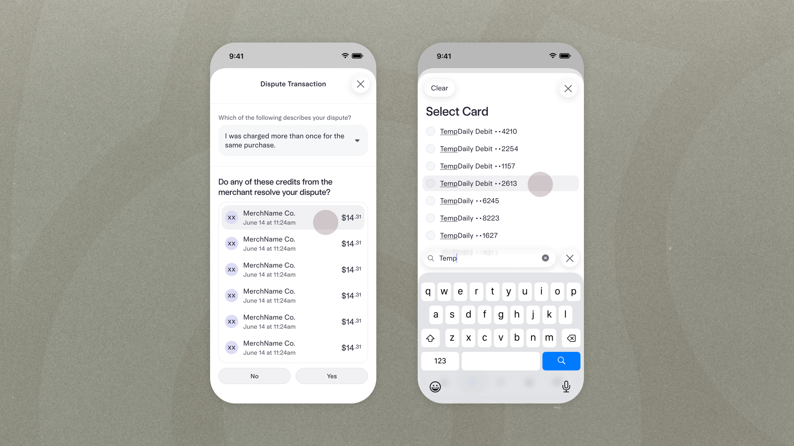
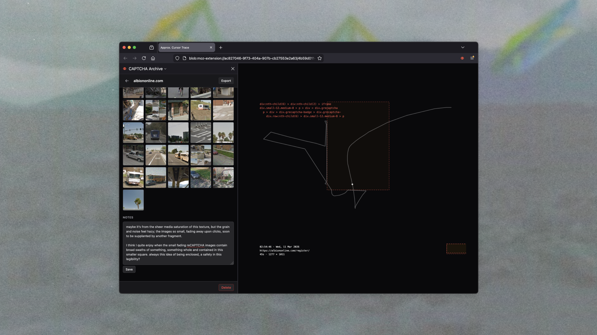

intro section here intro section hereintro section hereintro section hereintro section hereintro section hereintro section hereintro section hereintro section here here intro section hereintro section hereintro section hereintro section hereintro section hereintro section hereintro section hereintro section here here intro section hereintro section hereintro section hereintro section hereintro section hereintro section hereintro section hereintro section here here intro section hereintro section hereintro section hereintro section hereintro section hereintro section hereintro section hereintro section here
Disputes Tooling Opportunities
Challenge
about time at mercury

CAPTCHA Diary
Challenge
about time making this
